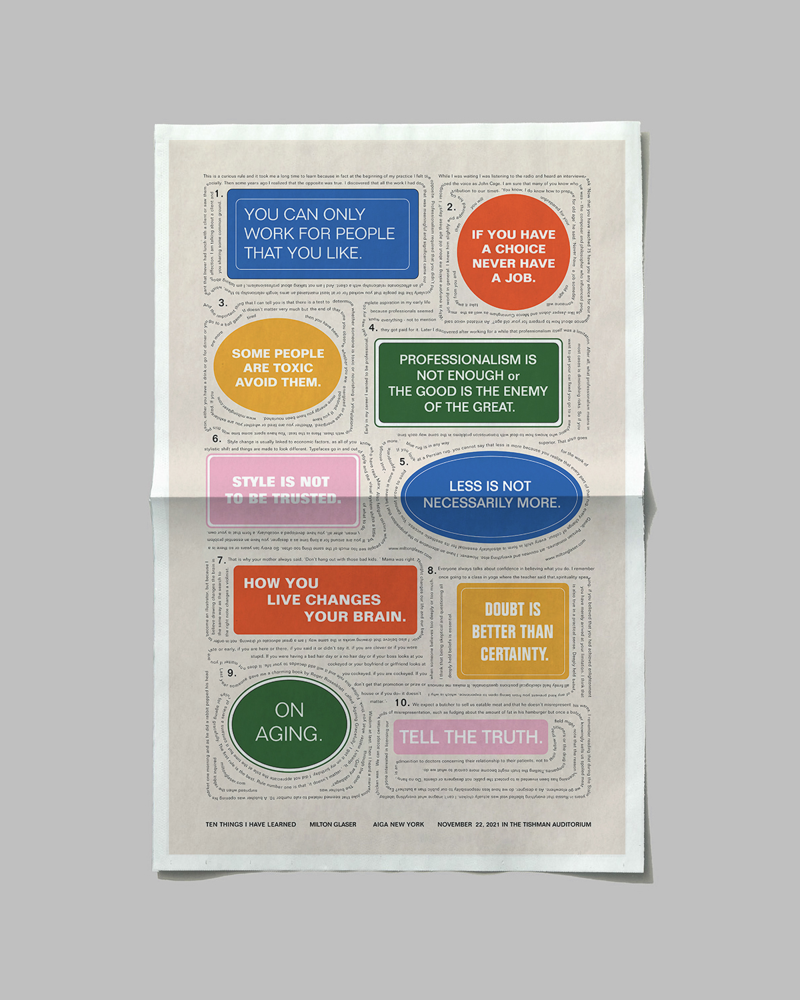

Work Share
week 1: work share

I found the reading, “Handmade Web” for this week to be pretty interesting. The term "handmade" in reference to web pages was a new idea for me becuase I had a different idea of what handmade meant. Before the reading, I wouldn't have necessarily chosen "handmade" to describe something so digital, like the web. However, when web pages are compared to print materials, mentioned in the reading, "handmade" seems right to describe the two.
For the face exercise, I used checkboxes for the blue hair. For the mouth and eyes, I used black & white colored text boxes.

An example of an instructional based art is Kiel Mutschelknaus's Space Type Generator. This generator allows users to play with type in motion in different forms, colors, speeds, etc.
Drawing 1:
1. for this drawing, you will need: a writing or drawing tool, a straight edge (of any size), and an 8.5 x 11 piece of paper
2. find the center of the paper (doesn’t have to be the dead center) and mark it with a dot
3. around the dot, lightly draw 50-60 dots spread out across the paper
4. when doing this keep, in mind the length of your straight edge
5. when you are done, find your initial center dot
6. align one of the dots with the center dot with the straight edge
7. draw a line connecting the two dots
8. do this with the rest of the dots
9. now you are done!
Drawing 2:
1. in the center of the paper draw 4 large blobs that don't touch
2. these blobs should not have any straight lines
3. draw a few smaller blobs connecting the larger blobs
4. these should overlap the lines from the first set of blobs
5. take a moment to identify all the intersecting lines that are intersecting
6. smooth out the corners of the intersecting lines with small “c” shaped curves
7. do this to each intersecting line
8. go over the rest of the lines loosely
9. stay close to the original lines drawn
Drawing 3:
1. prepare 2 markers/ highlighter colors
2. start at the center of the paper and draw a medium-sized blob
3. the blob should have no straight lines
4. draw 5 more smaller or bigger blobs around it
5. take your first maker/highlighter color and outline all the blobs drawn
6. draw 6 blobs on top of those blobs you just outlined
7. take your 2nd marker/highlighter
8. outline the second layer of blobs
9. finally draw 6 more blobs on top of the existing blob shapes
10. these blobs should only have pen
Final Drawing Instructions:
1. for this drawing, you will need: a pen or pencil, and an 8.5 x 11 piece of paper
2. starting in the center of the paper, loosely draw 5 organically shaped blobs (around the same sizes) that don’t overlap
3. on top of those shapes, draw a few slightly smaller organically shaped blobs that connect the larger shapes
4. these should overlap the lines from the first shapes drawn
5. take a moment to identify all the lines that are intersecting/ overlapping on the paper
6. for every set of perpendicular intersecting lines, draw a stretched four-pointed star made up of “c” shaped curved lines
7. do this for each set of intersecting lines
8. now you are done!
The results of this were definitely mixed. It seems that most people understood the 2nd instruction. However from there, I counld tell many people got confused. Although the instructions were wordy and awkward to follow, a few classmates surprisingly matched my drawing perfectly. (My drawing is the middle one in the top row)
project idea & concept:
Distort | verb : to pull or twist out of shape
Distorted Type
- Displaying different ways type can be distorted
- Stretching, twisting, erased, cut, fade, pixelated etc.
inspiration:
technology:
- Javascript, [blotter.js]
- Html & css
design constraints, instructions for change & use of random:
possible constraints / use of random
- Different sizes
- Various widths & heights
- Textures, repetition, patterns??
Instructions for change
- Refresh or clicking the mouse
sketches:
computer sketches:
project idea & concept:
Generative Petri Dish
- To generate different designed petri dishes with various shapes, patterns & color combinations
- kinda gross but cool
- Is organically formed, has many potential possibilities
inspiration:
technology:
- P5.js
design constraints, instructions for change & use of random:
Constraints / random
- Size, shape, opacity, color
- Texture & patterns
sketches:
computer sketches:
Fusce in malesuada ligula. Donec eleifend dui eu mi condimentum interdum. Cras justo tortor, imperdiet at ante vel, adipiscing venenatis nisl. Donec bibendum porttitor ipsum. Mauris turpis justo, tristique eget ipsum vel, volutpat lobortis velit. Aliquam sit amet ultrices eros. Vivamus ut diam sed leo pretium bibendum et sit amet tortor. Proin facilisis urna lobortis dictum semper. Nulla a imperdiet eros. Class aptent taciti sociosqu ad litora torquent per conubia nostra, per inceptos himenaeos. Donec et vehicula elit. Cum sociis natoque penatibus et magnis dis parturient montes, nascetur ridiculus mu